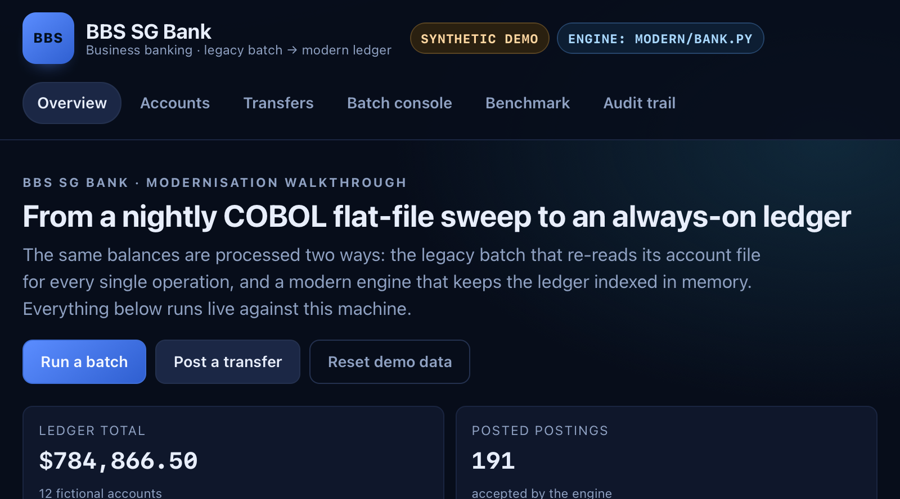
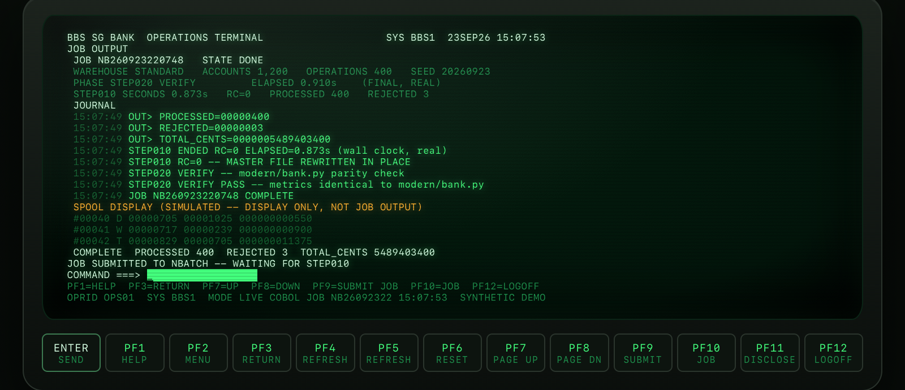
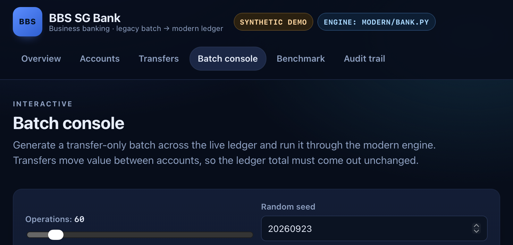
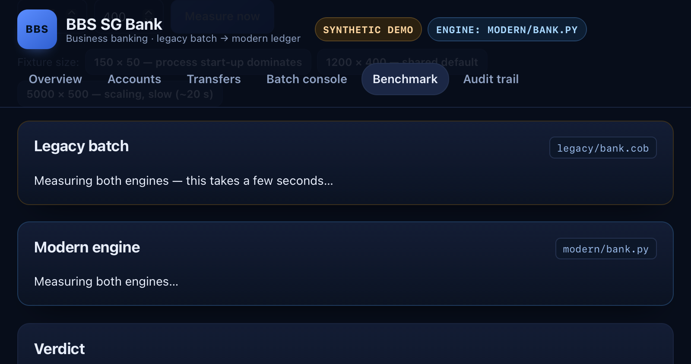

SF Enterprise Hackathon 2.0
A truthful, evidence-linked legacy modernization — the planning driven through the Opsera Forge pipeline, the engine written and tested here.

modern/bank.py engine over synthetic data. Fictional bank; no real accounts.The problem
For every single operation, the legacy program:
accounts.dat and scans every account, thenread operations.dat for each operation: # O(M) scan ALL accounts # O(A) rewrite ALL accounts # O(A) display PROCESSED / REJECTED / TOTAL_CENTS
Shapes are drawn from the code: the legacy inner loops are proportional to the account count, the modern engine is not.
docs/02-before-after.md §3).Before — legacy COBOL
legacy/bank.cob L108 *> Legacy bottleneck: reopen and scan the flat file for every operation. L133 *> Legacy bottleneck: rewrite every account for every accepted operation.

bank.cob for real (GnuCOBOL 3.2.0). Preset M shown: 1,200 accounts × 400 ops, 400 processed / 3 rejected, 0.873 s real COBOL wall clock, parity PASS. Synthetic fixture; the screen labels its replay rows as simulated.After — modern engine
# modern/bank.py accounts = {} # load once O(A) for row in accounts_file: account, cents = row.split("|") accounts[account] = int(cents) for row in operations_file: # O(M), O(1)/op ... validate via dict lookups ... accounts[source] += amount write accounts once # O(A)
Same validation rules, same on-disk format, same stdout contract — the parity harness enforces it.
Before / after
| Dimension | Before — legacy | After — modern |
|---|---|---|
| Paradigm | Flat-file, re-scan per operation | In-memory index, one pass |
| Cost | O(operations × accounts) | O(accounts + operations) |
| File writes | Whole file per accepted op (via temp file) | Once per run |
| Source | 172 lines COBOL | 54 lines Python |
| Toolchain | GnuCOBOL | python3 (stdlib) |
| Change safety net | None in repo | Parity harness + 5 unit tests |
| Output contract | Unchanged — byte-identical accounts.dat and stdout on identical input | |
Safety divergences, stated plainly: the modern engine fails closed on duplicate account ids and on a balance that would exceed PIC 9(12), where the legacy program keeps duplicates and truncates. This is deliberate and characterised by tests.
Correctness
# scripts/benchmark.py — same fixtures, both engines legacy = run("cobc" compiled binary) modern = run("python3 modern/bank.py") assert legacy.counts == modern.counts assert legacy.accounts_bytes == modern.accounts_bytes
A divergence raises. Correctness is a test, not a claim.
AT-1…AT-13 pass deposits, withdrawals, transfers, every rejection case, format, totals, malformed input, parity.
core suites green 33 in scripts/test_bank.py + 5 in tests/test_modern.py
108 local tests passing site 50 · operator terminal 20 · core 38
parity byte-identical legacy vs modern on identical fixtures.

accounts.dat before claiming a pass. Synthetic data.accounts.dat); AT-13 is the scaling gate — the speedup must grow with the account count, and it does: 4.3× → 8.0× → 13.1× → 24.6× across the sweep.Performance — measured
cobc ⇒ speedup: null, never an estimate
scripts/evidence/; the demo app reports speedup: null when cobc is absent.Built with Opsera Forge
| Stage | Artifact | Repo home | Status |
|---|---|---|---|
| Assessment | Legacy analysis · ForgeScore | docs/forge/assessment.md | complete · raw export absent |
| Intent | Goal + constraints | docs/forge/intent.md | v1 approved · exported |
| PRD-Spec | FR / NFR | docs/forge/prd.md | v1 approved · exported |
| Architecture | Design + decisions | docs/forge/architecture.md | v1 approved · exported |
| User Stories | Work orders | docs/forge/work-orders.md | v1 approved · exported |
| Testing | Test plan | docs/forge/testing.md | v1 exported · not approved |
| Delivery | Release + hosted app | docs/forge/delivery.md | pending |
assessment.md is a team transcription of the values read from the Forge UI. Testing v1 was generated and exported without an approval step (no Approve action shown). The exported documents sit in docs/forge/ with verified SHA-256 hashes. The 33 stories and 132 test cases are proposals — not implemented features and not executed tests; the local executable suites are 108 passing. The supplied MCP token returns 401, so exports came via signed-in browser downloads. Forge did not generate or run the modern engine, its document proposals (safe temp-file replacement, append-only audit, FastAPI, Forge Shipping) are not implemented, and nothing is deployed.Modernization impact
Linear batch: growing volume no longer degrades super-linearly.
One write per run instead of one or more per transaction.
A parity harness guards every future modification.
Drops the GnuCOBOL toolchain; runs on python3 stdlib.
Files and stdout unchanged — no downstream breakage.
Every claim linked to code, a test, or a re-runnable command.
Every posting audited with a status and a reason in the demo app.
Same validation rules and rejection reasons, byte-for-byte output.
Honest status
modern/bank.py)site/, 50 tests)legacy-ui/, 20 tests)Team & links
Project links and evidence for the hackathon entry. Individual contributors and their public posts will be supplied when confirmed.
https://github.com/vasanthsreeram/bbs-sg-bank-modernization
https://bbs-sg-bank-demo.pages.dev/media/bbs-sg-bank-demo.mp4 — 73-second recorded demo
Open the interactive app · free Worker uses a JavaScript port; real COBOL terminal runs locally
Per-member public post links are required for submission and have not been supplied.
python3 scripts/test_bank.py → 33 tests · python3 tests/test_modern.py → 5 tests ·
python3 scripts/benchmark.py --accounts 1200 --operations 400 → parity + timings (needs cobc) ·
python3 site/backend/app.py → the demo app on 127.0.0.1.Thank you
Questions? We'll answer with code, tests, and commands — never with a number we didn't measure.